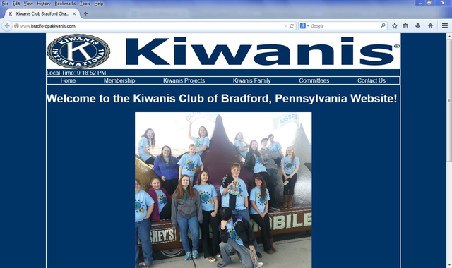
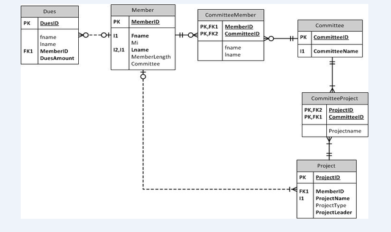
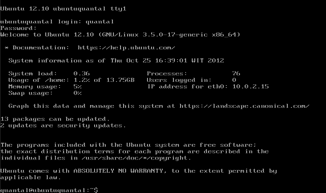
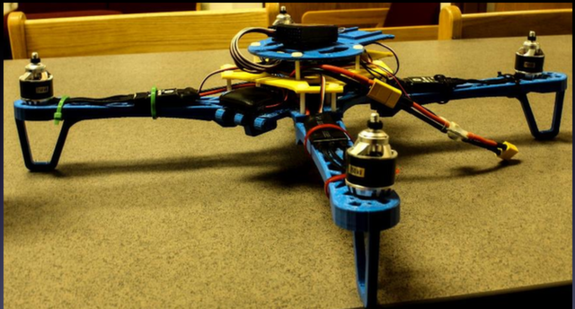
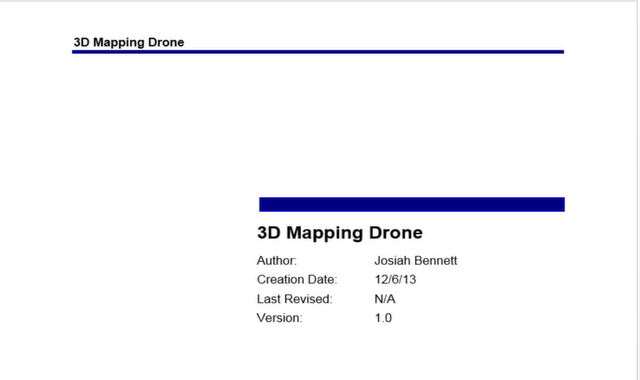
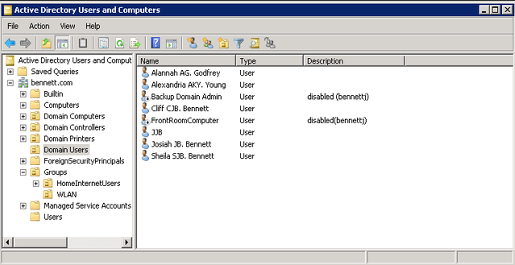

| My Projects |
|---|
| 
Bradford Kiwanis Website |
A presentation on the penetration testing tools Backtrack and Kali Linux. Discusses tools within each distribution as well as discusses the differences of both. |
|  Project documentation for a database built for Introduction to Databases class. Contains Physical database model as well as the script used to create the database. |
|  The final writeup of a server project done for System Administration class. The project dealt with creating a server that also allowed for fileshares. The project went well until the hard drives crashed when it was supposed to be presented. |
|  The powerpoint from my Capstone presentation. The Capstone class is the final test of our skills learned during our college career. It dealt with choosing an IT related project and see it through from start to finish. We also had to give weekly status updates in class to show our progress. My project dealt with creating a drone from 3D printed parts. |
|  The project proposal for my 3D printed drone. Created for Project Management in IT class. |
|  Home Domain Project Using my knowledge gained from my schooling I set up a Windows Server 2008 R2 Domain on my home network. The domain controller is complimented with standalone DHCP and DNS servers. A backup domain controller is also present in case of a problem with the primary. Active Directory Domain Services are running for domain controlling purposes. |